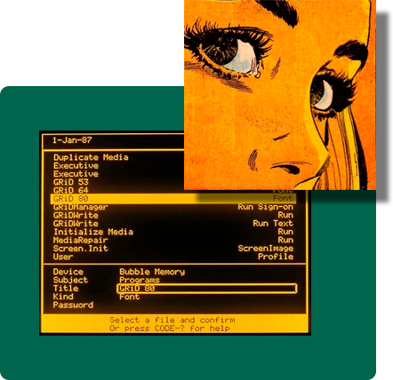
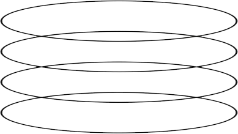
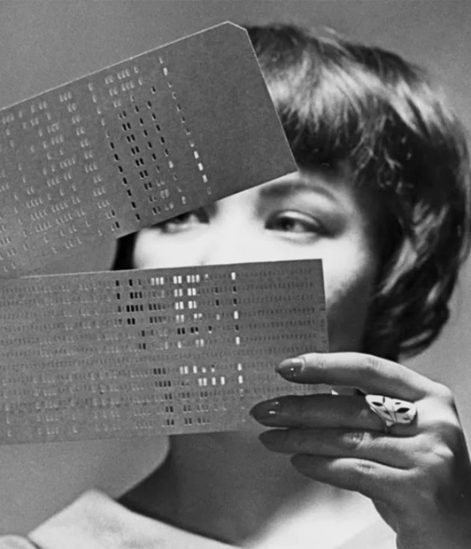
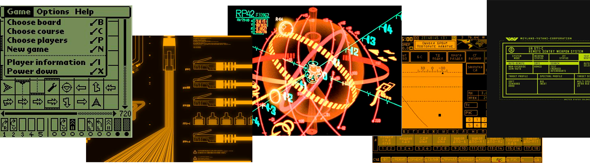

<!DOCTYPE html>
<html lang="ru">

<head>
	<meta charset="UTF-8">
	<meta http-equiv="X-UA-Compatible" content="IE=edge">
	<meta name="viewport" content="width=device-width, initial-scale=1.0">
	<link rel="stylesheet" href="../css/history.css">
	<title>UI и UX в игровой индестрии</title>
</head>

<body>
	<div class="wrapper">
		<button class="upbtn">
		</button>
		<header class="header" id="header">
			<div class="header__container _container">
				<div class="header__burger" id="burger_menu">
					<span>

					</span>
				</div>
				<nav class="header__nav">
					<ul class="header__list">
						<li class="header__logo">
						</li>
						<li class="header__li"><a href='./about.html'>О нас</a></li>
						<li class="header__li active"><a href='#'>История</a></li>
						<li class="header__li"><a href='../index.html'>Геймдев</a></li>
						<li class="header__li"><a href='./contacts.html'>Контакты</a></li>
					</ul>
				</nav>
				<form action="#" class="header__search">
					<input type="text" class="header__input" name="input">
					<button>
					</button>
				</form>
			</div>
		</header>
		<main class="main" id="main">
			<section class="evolution">
				<div class="evolution__container">
					<div class="evolution__more box _anim _anim_to-right _anim_no-hide">
						<div class="box__info">
							<h3 class="box__title">
								Эволюция UI: от примитивных консолей к современным интерфейсам
							</h3>
							<div class="box_img">
								
							</div>
							<p class="box__par">
								Как и почему менялись пользовательские интерфейсы,
								а что в них остаётся неизменным.
							</p>
							<a href="https://en.wikipedia.org/wiki/User_interface" target="_blank"
								class="box__btn btn-orange">Подробнее</a>
						</div>
					</div>
					<div class="evolution__ui ui-box _anim _anim_to-bottom _anim_no-hide">
						<div class="_anim_content">
							<h3 class="ui-box__title">USER INTERFACE UI</h3>
							<div class="ui-box__info">
								
								<div class="ui-box__content">
									<p class="ui-box__par"><span>User interface (UI)</span> — это инструмент взаимодействия
										человека
										с
										устройством, позволяющий решать конкретные задачи. Поэтому и эволюцию интерфейсов стоит
										рассматривать в контексте развития пользовательских сценариев.Обмен может происходить
										между
										программным обеспечением, компонентами компьютера, периферийными устройствами и другим
										железом, либо между человеком и компьютером.</p>
									<div class="ui-box__dec">
										
									</div>
								</div>
							</div>
						</div>
					</div>
				</div>
			</section>
			<section class="beginning">
				<div class="beginning__container">
					<h3 class="beginning__title _anim _anim_to-top _anim_no-hide _cat" id="kitty7">
						Аналоговый компьютер и первые терминалы
					</h3>
					<p class="beginning__par _anim _anim_to-top _anim_no-hide">
						Первые вычислительные машины использовали преимущественно для лабораторных исследований.
						Результат вычислений можно было увидеть на панели с лампочками-индикаторами, которые загорались в
						соответствии с полученными значениями, или на дисплее осциллографа — устройства, преобразующего
						электрические импульсы в визуальный график.
					</p>
				</div>
			</section>
			<section class="dude">
				<div class="dude__container">
					<div class="dude__content">
						<h3 class="dude__title _anim _anim_to-top _anim_no-hide">
							От перфокарты к текстовым интерфейсам<br>
							<span class="_cat" id="kitty9">(TUI)</span>
						</h3>
						<p class="dude__txt _anim _anim_to-top _anim_no-hide">
							В 1804 году появляется само понятие программирование — способа сообщения механизму некоего
							алгоритма действий. Жаккардовый ткацкий станок стал первой машиной, которую можно было
							программировать. Колоссальный прорыв с точки зрения воспроизводимости операций — станок
							программировался перфокартами.
						</p>
					</div>
				</div>
			</section>
			<section class="dudette">
				<div class="dudette__container">
					<h3 class="dudette__title _anim _anim_to-top _anim_no-hide">
						С чего все началось?
					</h3>
					<p class="dudette__txt _anim _anim_to-top _anim_no-hide">
						Перфокарты зародили программирование и совсем скоро появились разные станки, да и другие способы
						применения — например, механические пианино. А в 1873 году появилась первая итерация привычной нам
						раскладки QWERTY.
					</p>
					<p class="dudette__txt _anim _anim_to-top _anim_no-hide">
						По мере усложнения вычислительных задач стали развиваться и устройства ввода-вывода — теперь часть
						данных для обработки можно было загрузить через прикрученную к компьютеру клавиатуру. Для вывода
						результатов вычислений подключили телетайп — электронную печатную машинку. Именно эта связка,
						перфолента + телетайп, легла в основу базового текстового интерфейса — интерфейса командной строки, в
						котором пользователь вводит текстовую команду и следующей строкой видит результат её выполнения.
					</p>
				</div>
				<div class="dudette__picture">
					
				</div>
			</section>
			<section class="easterEgg">
				<div class="easterEgg__container">
					<p class="easterEgg__txt  _anim _anim_to-top _anim_no-hide">
						В современных текстовых интерфейсах до сих пор сохранилась пасхалка от создателей первых перфокарт —
						максимальное количество знаков по ширине экрана соответствует количеству знаков на стандартной
						перфокарте.
					</p>
				</div>
				<div class="easterEgg_decoration">
					
				</div>
			</section>
			<section class="development">
				<div class="development__container">
					<div class="development__main">
						<div class="development__header">
							<h2 class="development__title _anim _anim_to-right _anim_no-hide _cat" id="kitty8">
								<span>
									Стадии <span class="_color">развития</span>
								</span>
							</h2>
							<p class="development__desc _anim _anim_to-right _anim_no-hide">
								Все промежуточные стадии развития вычислительной техники сложно охватить, поэтому остановимся на
								самом интересном. И побежим сильно вперед к цифровой революций. Начало 1980-х годов ознаменовало
							</p>
						</div>
						<q class="development__quote _anim _anim_to-right _anim_no-hide">
							Едва ли в ближайшее время нас ждет конец эпохи GUI — но технологический прогресс неизменно
							доказывает, что по достижении определенной степени зрелости (а значит надежности, точности,
							безопасности и доступности) технологии молниеносно сметают своих предшественников.
						</q>
					</div>
					<div class="development__info">
						<ul class="development__list">
							<li class="_anim _anim_to-top">
								<span>
									Жестовый аппаратный интерфейс: руль, джойстик и т. д. (управление автомобилем, самолетом, да
									и
									дирижерство можно было бы сюда отнести);
								</span>
							</li>
							<li class="_anim _anim_to-top">
								<span>
									Интерфейс командной строки: инструкции компьютеру даются путём ввода с клавиатуры текстовых
									команд (станки, DOS, BIOS);
								</span>
							</li>
							<li class="_anim _anim_to-top">
								<span>
									Графический интерфейс пользователя (GUI, grapic user interface) — это где программные функции
									представляются графическими элементами. Так называемый WIMP: «windows, icons, menus,
									pointers».
									Это включает в себя и реализацию в виде жестового интерфейса.
								</span>
							</li>
						</ul>
						<div class="development__gtu">
							<p class="_anim _anim_to-top">
								<span>
									Графический интерфейс пользователя (GUI, grapic user interface) — это где программные функции
									представляются графическими элементами. Так называемый WIMP: «windows, icons, menus,
									pointers».
									Это включает в себя и реализацию в виде жестового интерфейса.
								</span>
							</p>
							<p class="_anim _anim_to-top">
								<span>
									Первый GUI был разработан в Xerox Palo Alto Research Center (PARC) для компьютера Xerox Alto,
									созданного в 1973 году. Это был некоммерческий продукт, предназначенный для научных
									исследований.
								</span>
							</p>
						</div>
					</div>
				</div>
			</section>
			<section class="windows">
				<div class="windows__container">
					<button class="windows__btn" id="left"></button>
					<div class="windows__box">
						<div class="windows__slider slider" id="slider"
							style="background-image: url('../assets/img/slider/1.png');">
						</div>
						<ul class="slider__dots">
							<li class="slider__dot dot1 active"></li>
							<li class="slider__dot dot2"></li>
							<li class="slider__dot dot3"></li>
							<li class="slider__dot dot4"></li>
							<li class="slider__dot dot5"></li>
							<li class="slider__dot dot6"></li>
						</ul>
					</div>
					<button class="windows__btn" id="right"></button>
				</div>
			</section>
		</main>
		<footer class="footer" id="footer">
			<div class="footer__container">
				<div class="footer__contacts">
					<div class="footer__phones">
						<h5>Контакты и телефоны</h5>
						<ul>
							<li>+7 938 453 666</li>
							<li>+7 938 453 666</li>
						</ul>
					</div>
					<div class="footer__media">
						<a href="https://facebook.com" class="footer__icon footer__fcb"></a>
						<a href="https://snapchat.com" class="footer__icon footer__snp"></a>
					</div>
				</div>
				<div class="footer__over">
					<p class="_cat" id="kitty6">game over</p>
				</div>
			</div>
		</footer>
	</div>
	<script src="../js/script.js"></script>
	<script src="../js/history.js"></script>
	<script src="../js/menu.js"></script>
	<script src="../js/cat.js"></script>
</body>

</html>